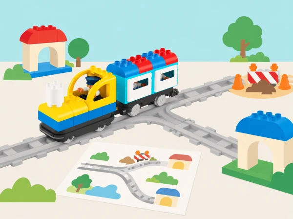
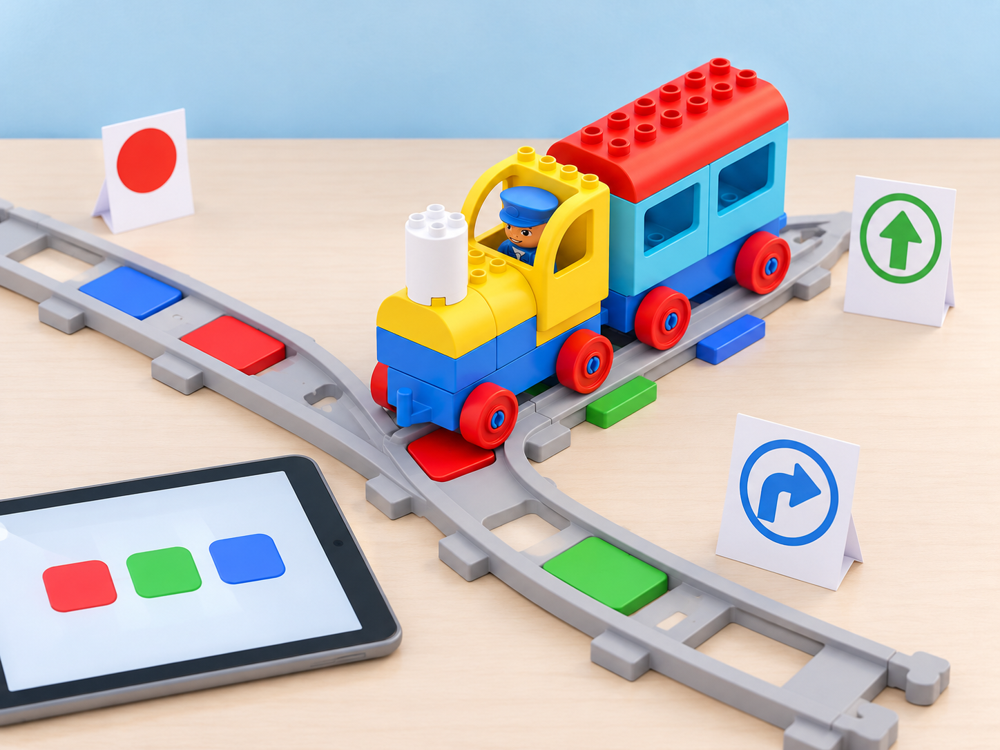

Rutes amb decisions
🏷️ Sistemes, rutes i resolució de problemes
🌱 Situació, repte i intenció
es poden simular les alternatives amb targetes si el tren no permet controlar una bifurcació de manera directa.
🎯 Aprenentatges i vocabulari
- Llegir una ruta en un mapa i descompondre-la en trams i decisions verificables.
- Comparar dues alternatives davant d’una bifurcació o incidència representada.
- Provar una solució amb les vies i els blocs disponibles, o simular-la amb targetes si el set no la permet.
- Justificar una revisió del pla amb el resultat observat i distingir-la d’una funció que el robot no té.
🧰 Materials i preparació
Prepareu el tren Coding Express, vies i peces del vostre lot, targetes de direcció, cinta de paper per al mapa i obstacles tous separats de la via. Reviseu les instruccions del fabricant abans del muntatge. No forceu les unions ni poseu peces que bloquegen rodes o sensors. Si una funció no és present al kit, convertiu-la en una decisió humana amb targetes.
📅 Seqüència didàctica
Com funciona el sistema? · How Does It Work? (45 min)
Fase 1 · Activem i prediem
Mostreu el tren i pregunteu com creuen que interacciona amb la via i els maons. Dibuixeu una predicció sobre què passarà sense maó, fora de la via i quan passe per damunt d’un maó de color.
Fase 2 · Explorem i construïm
Observeu el tren en cadascuna d’aquestes condicions. Identifiqueu el sensor de color de la part inferior i diferencieu les parts físiques —tren, sensor, via i tauleta— del programa de l’app.
Fase 3 · Expliquem i registrem
Proveu l’app amb els maons disponibles i registreu què fa el tren. Expliqueu que el maquinari llig el color i que el programari n’indica la resposta.
Si el set inclou un vagó que roda solt, compareu sobre una superfície plana una empenta suau i una estirada curta amb el tren apagat; si no, feu-ho amb una fitxa de paper. Separeu aquest model de forces del funcionament del motor: no empenyeu ni estireu el tren quan estiga encés.
Fase 4 · Apliquem i millorem
Amb el tren aturat, tapeu temporalment el sensor amb una cartolina fosca i feu una prova supervisada: prediu si podrà llegir els maons, comproveu-ho a baixa velocitat i retireu la cartolina quan el tren estiga parat.
Fase 5 · Comprovem i reflexionem
La bifurcació cap al mercat · Y-Shaped Track (45 min)
Fase 1 · Activem i prediem
Comenceu amb un joc de bitllets: trieu almenys tres llocs pròxims —per exemple, l’escola, el mercat municipal i la biblioteca—, poseu una fitxa de color a cada destinació i doneu un bitllet del mateix color a cada passatger. Predigueu quin ramal correspondrà a cada bitllet.
Fase 2 · Explorem i construïm
Construïu una via Y amb dues o més parades i col·loqueu maons d’acció perquè el tren es puga aturar. Verbalitzeu la condició «si el bitllet és de ___, aleshores anem a ___».
Fase 3 · Expliquem i registrem
Per torns, feu de conductor movent la palanca roja de la via per seleccionar la branca. Una persona comprova si el bitllet, la palanca i la destinació coincideixen; la resta descriuen el trajecte i el representen en un mapa.
Fase 4 · Apliquem i millorem
Com a ampliació, proveu els dos desviaments per crear una tercera branca o una Q i useu el maó verd disponible per representar el retorn a altres parades. Compareu la via Y amb una de bucle i una de doble extrem.
Fase 5 · Comprovem i reflexionem
Obres en el camí · Journey—Trouble on the Road (45 min)
Fase 1 · Activem i prediem
Converseu sobre per què les normes de trànsit ajuden a coordinar-se i interpreteu els quatre senyals de trànsit inclosos en el set amb el seu significat comprovat. Representeu decisions a escala de maqueta, sense córrer ni simular perills reals. Si el lot no té algun senyal, feu una targeta pròpia i marqueu-la com a substitució.
Fase 2 · Explorem i construïm
Al costat d’una via Y i de models propis, col·loqueu a l’atzar els maons d’acció. Connecteu el tren a l’app i exploreu-ne els botons abans de començar el recorregut. Trieu un maó que l’app permeta configurar, anoteu-ne el comportament inicial i canvieu una sola opció; repetiu el mateix tram per comprovar si la resposta s’ha modificat. Si la versió de l’app o el set no ofereix aquest control, registreu-ho i manteniu l’observació com a exploració, sense simular un canvi físic.
Fase 3 · Expliquem i registrem
Feu circular el tren per torns. Quan aparega un problema fictici en l’app o una targeta d’incidència, identifiqueu què ha passat i registreu la predicció, el senyal triat, el maó/app que l’equip ha programat i la resposta observada. Els senyals físics són models per a interpretar una situació: el tren llig el color dels maons, no reconeix ni interpreta els senyals de trànsit.

Fase 4 · Apliquem i millorem
Proveu la resposta, empreu els quatre senyals disponibles en una nova ronda i inventeu-ne un de propi amb un model o pictograma. Poseu-lo al mapa i justifiqueu-ne la ubicació. Compareu una seqüència repetida de parades i expliqueu quina instrucció o configuració canvia quan l’incident és diferent.
Fase 5 · Comprovem i reflexionem
Un mapa per compartir · Story Maps (60 min)
Fase 1 · Activem i prediem
Llegiu un relat breu propi o de lliure ús i identifiqueu-ne personatges, escenari, inici, nus i desenllaç. Predigueu quines accions del tren poden representar els esdeveniments.
Fase 2 · Explorem i construïm
Ompliu un mapa de conte amb una fila per esdeveniment: què passa, quina acció ha de fer el tren i quin maó o tram de via la provoca. Trieu la forma de la via i col·loqueu els maons necessaris; per exemple, el maó blanc activa o desactiva els llums si així ho confirma el kit.
Fase 3 · Expliquem i registrem
Proveu de contar la història seguint el pla. Registreu si l’acció observada coincideix amb el que volíeu i on es produeix qualsevol diferència.
Fase 4 · Apliquem i millorem
Si la resposta no coincideix, depureu una decisió cada vegada —ordre d’escenes, ubicació del maó o instrucció— i torneu a executar-la. Després, creeu en grups un relat nou; qui necessite suport pot partir d’un mapa parcial amb personatge, lloc i colors d’accions suggerits.
Fase 5 · Comprovem i reflexionem
Intercanvieu els mapes perquè un altre equip conte la història sense explicacions addicionals.
🧪 Evidències i avaluació
Recolliu els esquemes del sistema, mapes de bifurcació, desviaments i relats cartografiats. Valoreu si l’equip identifica parts i relacions, considera més d’una ruta, prova una decisió amb seguretat i comunica instruccions reproduïbles. Registreu també quina limitació del model encara no s’ha resolt.
♿ Participació, accessibilitat i seguretat
Reduïu el mapa a dos camins ben diferenciats i useu símbols tàctils o amb alt contrast. Es pot dirigir el tren, col·locar targetes, contar el relat o comprovar el mapa amb un itinerari de fitxa. Doneu temps de planificació i permeteu assajar sense moviment quan aquest siga una barrera.
🔗 Referents i adaptació
Adaptació de les quatre lliçons de Advancing with Coding Express: How Does It Work?, Y-Shaped Track, Journey—Trouble on the Road i Story Maps, contrastades amb el pla docent oficial en PDF. Els reptes mantenen investigació, bifurcació, desviament i mapatge amb exemples i recursos propis, ajustats al kit real del centre; la prova de configuració de l’app és condicional a les opcions que mostre la versió disponible.